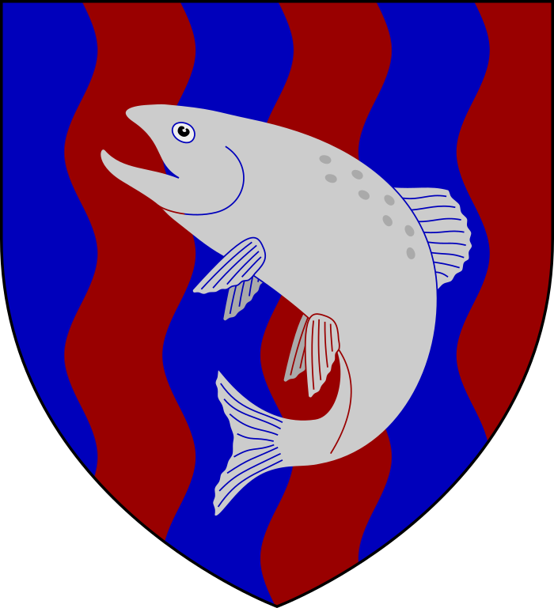

The Known Realm
Three sagas on one map table — from the tourney at Ashford Meadow to the Dance of the Dragons to the long winter of the great war. Follow every soul, banner and border, episode by episode and chapter by chapter.

Choose your road
Each saga has its own map and its own wiki above. These run through all three.

House Family Trees Eleven great houses, root and branch — the dragon line from the Old King to the Mother of Dragons, with all the marriages the septons frowned at. Climb the trees →The realm at a glance
Counted across all three sagas, not one — and recounted from the site's own files, so these numbers cannot drift out of true.
—
About this project
The Known Realm is a companion to George R.R. Martin's world of ice and fire — three interactive maps that follow the story point by point, three wikis written out at length, a chronicle of twelve thousand years, the family trees of the great houses, and a handful of games for the long winters. Everything runs in plain HTML, CSS and JavaScript, and no account is needed to read a word of it.
Every word of the chronicle is written for this site, and every banner and painted scene in the gallery is drawn for it. Nothing here is lifted from another wiki.
The realm grows tale by tale. Found a misplaced castle, a soul standing in the wrong city, or a death the ledger missed? Ravens are welcome.
📜 The road ahead — what's still to come →With thanks to my brother Hans-Magnus — the idea was his, and he helped me set the realm in motion.